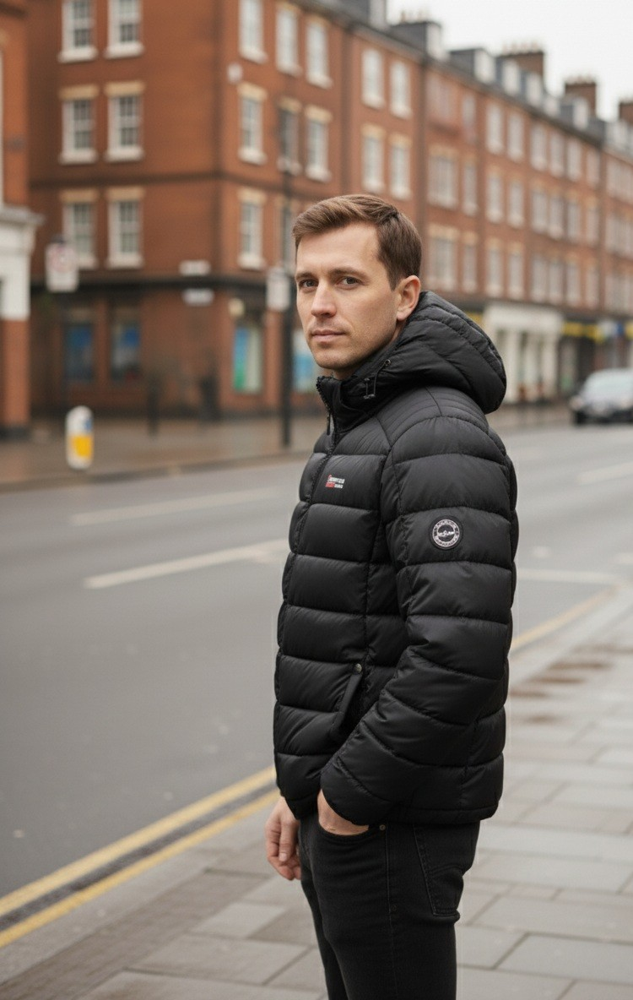

Striukė su kupranugario užpildu (p01)
Šilta, įprasto ilgio žieminė striukė su kupranugario vilnos užpildu. Tinka tiek prie švarko, tiek prie džinsų, todėl yra universalus pasirinkimas komandos aprangai. Prieinama dviem spalvomis: tamsiai mėlyna ir tamsiai chaki. Dydžiai – 48–58. Užsakymai nuo 5 vienetų, o kuo didesnis kiekis, tuo mažesnė vieneto kaina. Galime uždėti Jūsų įmonės logotipą, pristatymas visoje Lietuvoje nemokamas.